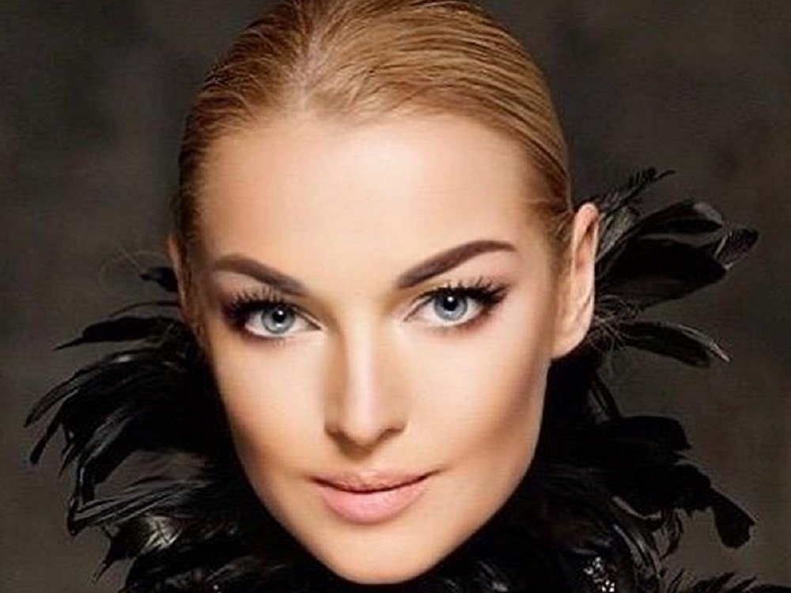
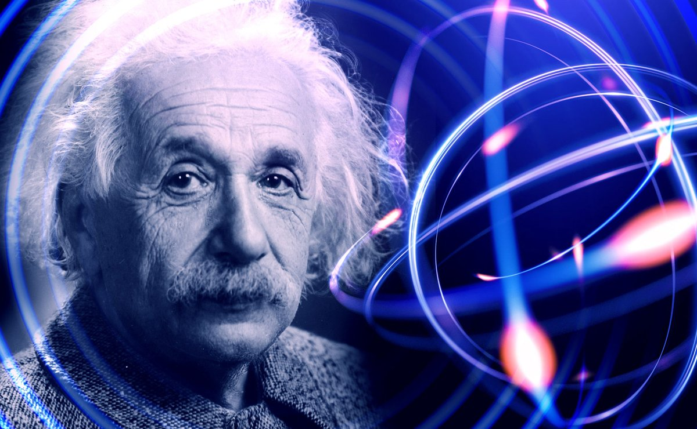
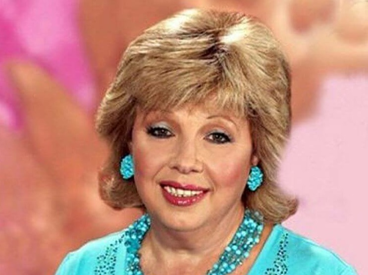
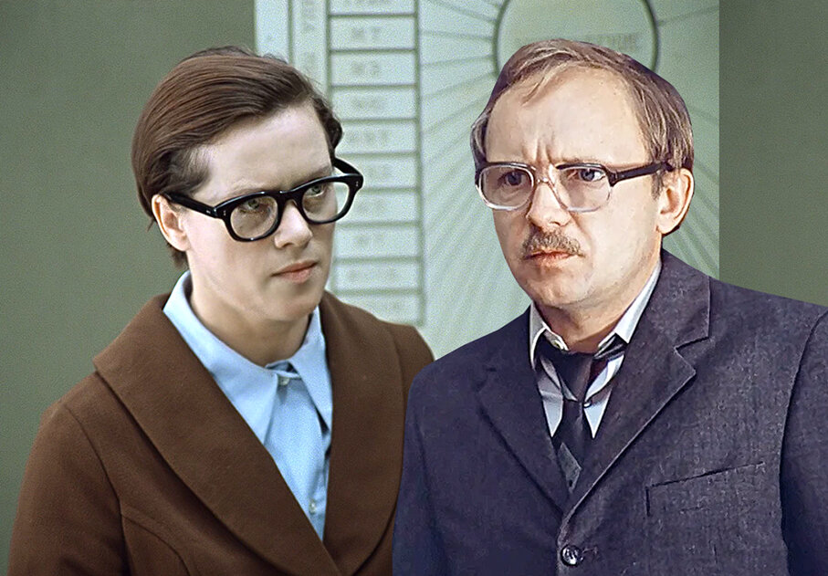
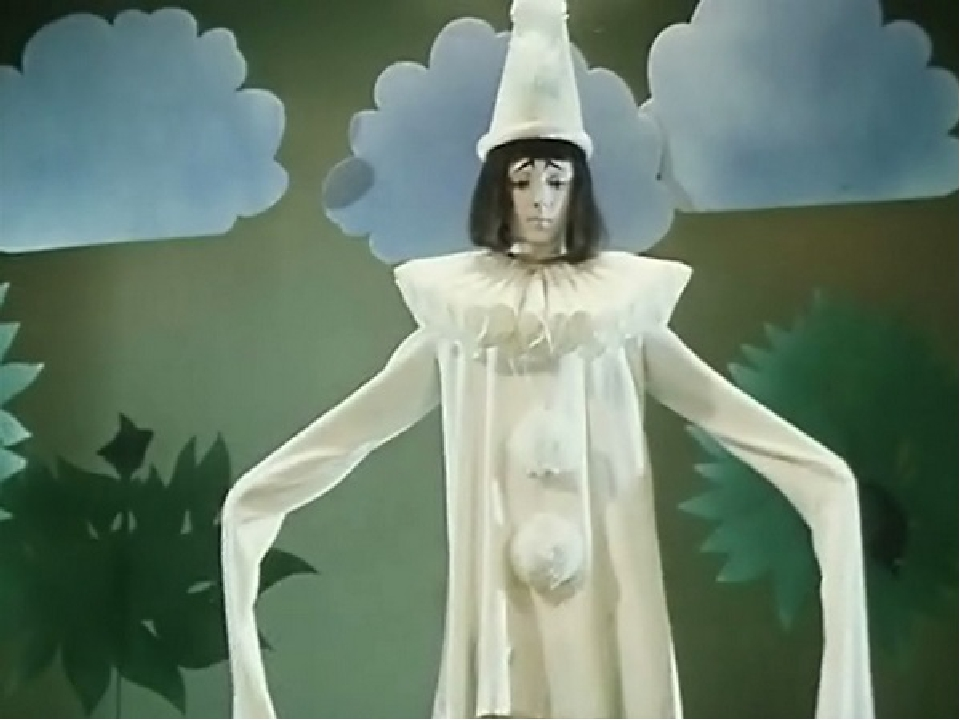

В психологии используются различные подходы к классификации психотипов личности. Так, классификацию в зависимости от способа обработки и вида информации, который воспринимает наша психика, описывает соционика.
Специалисты в области психологии поведения человека используют в работе психологическую типологию, основанную на теории эмоций Роберта Плучика.
Ответить на вопрос: «кто я по психотипу?» помогают специальные определяющие психотип тесты.
Базовые психотипы личности
От того, кто человек по психотипу во многом зависят его поведение и реакция на различные ситуации. Психотипы личности влияют и на внешние признаки своих обладателей.
Психотипы людей делятся на восемь базовых профилей:
1. Истероиды — люди красоты и самолюбия

Главное в жизни — это Я! Их базовая эмоция — сенсорное удовольствие. Нервная система подвижная, но слабая. На пике позитива эмоционально «зажигают» аудиторию. На пике негатива эмоций устраивают потрясающий скандал. Истероида невозможно не заметить. Их внешний вид отличает контрастность, эксцентричность, символизм, пластичность, театральность.
Примеры: Анастасия Волочкова, Сергей Зверев, Николай Басков, Филипп Киркоров.
2. Эпилептоиды — люди порядка и правил
В жизни все должно быть параллельно и перпендикулярно. Их базовая эмоция — гнев. Нервная система малоподвижная, энергетически ослабленная. Это люди, которые стремятся держать все под контролем. Говорят короткими фразами. Редко признают себя виноватыми, виноват всегда кто-то. Их внешний вид отличает напряженность, тяжелый взгляд, отсутствие пластичности. При этом эпилептоиды аккуратны, опрятны, одеваются по ситуации.
Примеры: Сергей Шойгу, Александр Лукашенко.
3. Паранойалы — люди цели и власти

В жизни главное — цель! Это прирожденные лидеры. Они мыслят масштабно и готовы повести за собой. Их базовая эмоция — презрение. Нервная система сильная, но малоподвижная. «Застревают» на сверхценной идее. Идею они придумывают не сами, но способны внедрить ее в массы. Это люди дела. Их внешний вид отличает напряженность, стабильность, статусность, приверженность стилю, архетипичность.
Примеры: Владимир Путин, Дональд Трамп, Ангела Меркель, Стив Джобс.
4. Шизоиды — люди творчества и исследований

Главное в жизни — это исследование. Базовая эмоция — интерес, познание, исследование. Люди этого психотипа видят мир иначе, чем остальные. Шизоидность — это мышление и мышление нестандартное. Именно таким людям приходят в голову фантастические идеи. Да, они не могут их сами реализовать. Но есть те, кто заметит новые идеи и предложит их на всеобщее обозрение. Это будут паранойалы. Каждый паранойал ищет своего шизоида. Внешний вид шизоида — это странность во всем. Они выглядят неухоженными, неаккуратными, потому что бытовые условия их не волнуют. Весь свой мир носят перед собой — обожают рюкзаки и большие сумки.
Примеры: Альберт Эйнштейн, Карл Маркс, Александр Бородин, Лев Ландау, Сергей Мавроди, Анатолий Вассерман.
5. Гипертимы — люди скорости и интереса
Ух ты! В жизни столько интересного! Базовая эмоция — удивление. Нервная система сильная, подвижная, с преобладанием процессов возбуждения. Эти люди все время в движении. Они во всем находят позитив, очень коммуникабельны. Одеваются так, чтобы было удобно. Легки на подъем, склонны к авантюризму. Быстро реагируют на все, но забывают детали. Не любят рутинную работу.
В качестве примеров людей этого типа возьмем литературных героев — Остап Бендер, Д’Артаньян, барон Мюнхгаузен.
6. Эмотивы — люди доброты и заботы

Главное — это счастье окружающих! Базовая эмоция — радость. Нервная система слабая. Из-за особого функционирование коры головного мозга, эти люди практически не умеют говорить «нет». Любое поведение человека достраивают до позитивного, часто в противовес реальности. Они хорошо чувствуют другого человека и хотят быть ему полезными. Их внешний вид отличает элегантность, одеваются со вкусом, любят трикотаж. Предпочитают аккуратные удлиненные прически. У людей этого типа все написано на лице.
Примеры: мать Тереза, Далай-лама, Лариса Рубальская.
7. Тревожно-мнительные — люди безопасности и перестраховки

Как страшно жить! Главный лозунг жизни — перестраховаться, перепроверить, уточнить, выяснить, детализировать, пересчитать. Базовая эмоция — страх. Нервная система слабая и малоподвижная. Недоверчивы, поведение любого человека переопределяют в «минус». Они стараются избегать любой опасности, не любят перемен. Не верят словам, а только документам, фактам, авторитетам. В одежде преобладает серо-черная гамма. Почти всегда ходят в одном и том же.
Пример: Анатолий Ефремович Новосельцев («Служебный роман»).
8. Депрессивно-печальные — люди грусти и печали

Я жертва! Пожалей меня! Или так — ну, что у нас плохого? Есть мнение, что этот психотип может быть обратной стороной истероида. Человек, которого по каким-либо причинам недооценили, или человек, который пережил большую утрату. Базовая эмоция — печаль, грусть. Нервная система слабая и застревающая. «Раньше я этим обладал, теперь у меня этого нет». Нет времени, нет возможности, нет денег и т.д. Этот формат очень удобен для манипуляций. Бывает, в этот психотип на время или навсегда «сваливаются» представители других психотипов.
Примеры: Андрей Губин, Константин Хабенский, из сказочных персонажей Пьеро («Приключения Буратино»), ослик Иа («Приключения Винни-Пуха»).
Умение определить кто ты по психотипу поможет осознать свои сильные стороны и какие ресурсы можно использовать для развития. Умение определить, к какому психотипу относится человек, с которым вы общаетесь, поможет выстроить с ним доверительные отношения. Этим в частности активно пользуются специалисты, проводящие коучинг или любое другое консультирование.